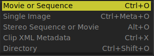

The File Open Menu

The File Open menu allows you to open a movie file or a sequence of images.
It allows you to load a single image instead of the whole sequence.
And it allows to load the Clip XML Metadata for ACES LUT management.